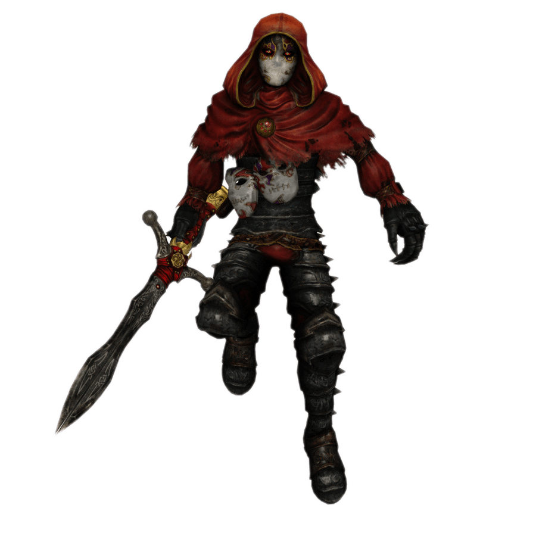

ERROR 404
Surgió un error inesperado!
Ahora el gran y temido Jack of Blades dominó toda Albion.
Volvé a intentar, y acordate, el destino depende completamente de vos.


Surgió un error inesperado!
Ahora el gran y temido Jack of Blades dominó toda Albion.
Volvé a intentar, y acordate, el destino depende completamente de vos.